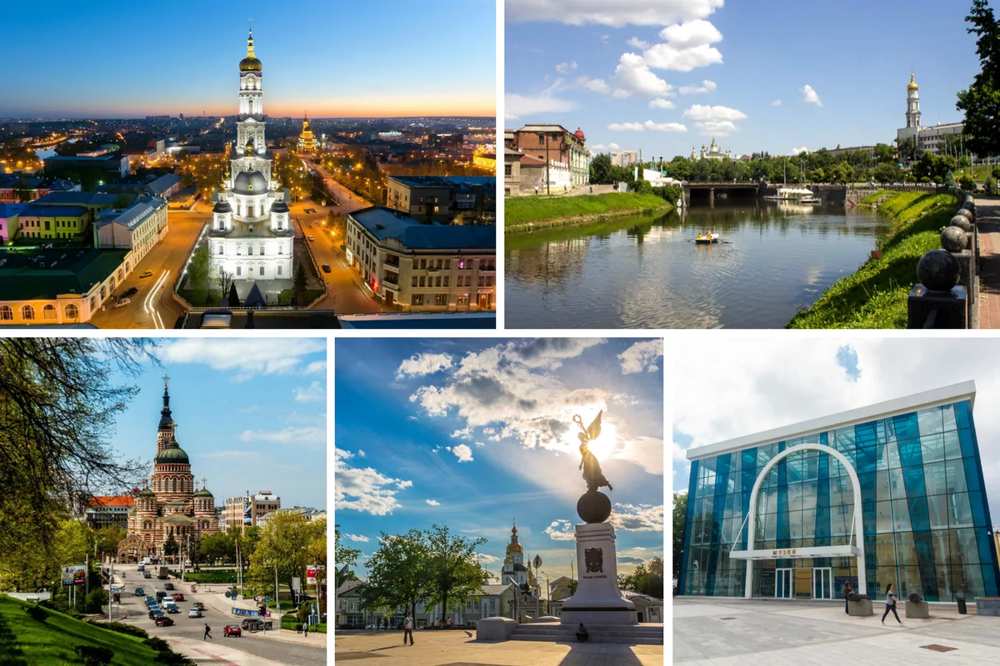
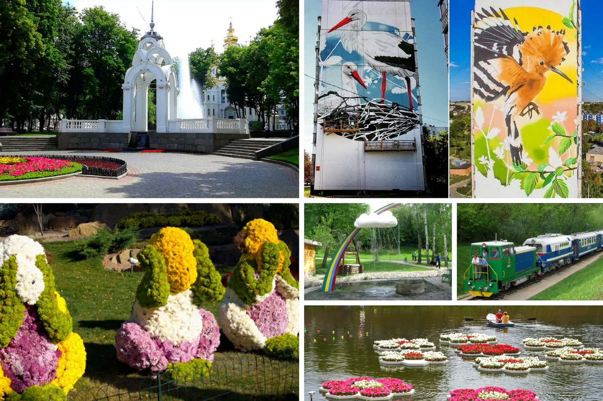

Харьков – это город, где:
- В одном из спальных районов проживает больше людей, чем в Майами;
- Одежду вешают не на “плечики”, а на “тремпель”
- Есть целый рынок – рай для букинистов;
- Говорят в быту по-русски, свободно переключаются на украинский язык и готовы горой стоять за свою страну и ее национальное культурное наследие;
- Люди гостеприимны и все больше внимания уделяют иностранным языкам: на улицах все чаще можно услышать английскую, немецкую, французскую и польскую речь и, конечно же, родную украинскую в разных ее акцентах;
- Совсем недалеко от центра действует крупнейший в Украине рынок Барабашово, где можно купить все — от иголки до розового слона;
Инфраструктура Харькова
Отличительная черта Харькова — это просторные площади, среди которых самая большая в Украине и одна из крупнейших Европе — Площадь Свободы. Она и вправду огромна. Здесь регулярно проходят концерты, флешмобы, фестивали и спортивные соревнования. Каждую зиму на площади красуются новогодняя елка, сказочный городок и бесплатный каток под открытым небом. В 2008 на этой площади легендарную группу Queen вживую услышало и увидело рекордное за всю историю группы число людей — свыше 300 000 человек. Сообщение между разными частями города обеспечивают троллейбусы, трамваи, маршрутки, комфортабельные автобусы и три ветки метро. В электротранспорте внедряется система электронных билетов. Дорога на общественном транспорте даже из отдаленных уголков до центра, железнодорожного вокзала, автовокзала и даже аэропорта занимает не более 40 минут.
Междугороднее и международное сообщение
Поездами за одну ночь из Харькова можно добраться в Киев, Одессу, и даже во Львов. Скоростной экспресс Интерсети+, который курсирует 4 раза в день, довезет вас до столицы за 4,5 часа. Харьковский аэропорт — самый большой в Восточной Украине, и за 2017 год его пассажиропоток составил более 806 тысяч пассажиров. Здесь осуществляют полеты такие авиакомпании, как “МАУ”, Turkish Airlines, Pegasus Airlines, LOT, Belavia, AZUR air Ukraine, Bravo Airways, Ellinair, UmAir, Wizz Air, Yanair Современный компактный аэрохаб с доступными ценами на услуги, зарядками для электромобилей и долгосрочной стоянкой для машин в 2016 году вошел в список лучших европейских аэропортов по версии международного совета ACI EUROPE. Прямые рейсы из Харькова доступны в следующие города:
- Киев (хаб) от $47
- Дортмунд (Германия) от $32 — полеты доступны с апреля 2018
- Катовице (Польша) от $21- полеты доступны с июня 2018
- Варшава (хаб) (Польша) от $145
- Тель-Авив (Израиль) от $113
- Стамбул (хаб) (Турция) от $92
- Вена (Австрия) от $25 (c 25.11)
Бальзам для глаз – архитектура и природа
Приятно жить в городе, который не просто удобен и практичен, но и красив. В центре Харькова сохранилась старинная архитектура, поэтому любителей побродить по уютным улочкам здесь ждут незабываемые приключения и даже квесты. Здания, принадлежавшие богатым купцам и предпринимателям начала прошлого века, улица Пушкинская, некогда Немецкая, построенная архитекторами из Германии, улицы Дарвина, Рымарская и Благовещенская таят в себе множество архитектурных особенностей и тайн. Улица Искусств до сих пор хранит в себе следы городской легенды о сумасшедшем ученом, Олеге Митасове и его философских рисунках и надписях на стенах. Харьковские соборы удивляют туристов своим архитектурным стилем. Благовещенский самый крупный кафедральный собор в Восточной Европе, расположился возле набережной, а недалеко от него — Покровский и Успенский, которые в свое время считались небоскребами.
По часовой стрелке: Успенский Собор, Нетеченская Набережная, Исторический Музей, Памятник Независимости “Украина, которая летит”, Благовещенский Собор Торжественный вид Харькову придают фонтаны. Каждый из них обладает своей изюминкой:
- Зеркальная Струя — традиционное место встреч и фотосессий молодоженов и выпускников;
- Каскад — место, где можно отдохнуть и полюбоваться вечерним городом;
- Площадь фонтанов возле Оперного театра (ХНАТОБ) — центральная жемчужина города;
- Олимпийский фонтан в парке Шевченко — поет вечерами и радует жителей города с 1980 года.
Любители природы и парковых зон могут насладиться красотой Ботанического сада, Саржиного Яра, набережной реки Лопань, Лесопарком с действующей детской железной дорогой, и, конечно, Парком Горького и Экопарком Фельдмана, ставших достоянием всей Украины.
По часовой стрелке: Фонтан “Зеркальная Струя”, муралы с птицами, Саржин Яр, Детская железная дорога, плавающие клумбы Нетеченской набережной, бал хризантем в Экопарке Фельдмана По рейтингу городов Украины, Харьков входит в тройку лидеров по качеству коммунальных услуг и сбора мусора. Харьковчане живут под девизом “Ми за чисте мiсто” и активно поддерживают инициативы по сбору и переработке мусора
Классическая, современная и альтернативная культура Харьковщины
Харьковский художественный музей, галерея “Бузок”, галерея АВЭК – места, где можно насладиться графическими произведениями как классиков, так и современных художников. Любителей классической музыки ждут органный зал и филармония, а также Дом органной и камерной музыки Успенского собора, где регулярно проходят концерты. В Театрах оперы и балета (ХНАТОБ) и им. А.С. Пушкина вы отлично проведете время, просматривая классические постановки. За разнообразием масок, форм и современных образов можно сходить в “Театр на Жуках” и “Театр 19”. Для детей всегда открыты двери Театра кукол и Театра юного зрителя, а также цирка. В центрах “Радмир Экспохолл” и ХНАТОБ регулярно проходят всевозможные выставки камней, материалов для handmade, готовых изделий, ювелирных украшений и даже домашних животных.
Мэр которого все будут помнить

Крепкие цитаты Геннадия Кернеса:
- "Миша, у тебя скучное лицо”
- "Давай по новой, Миша, всё х*йня"
- “Я тебя помножу на ноль”
- “Я вам не слесарь-пекарь”
- “Вы на себя в зеркало смотрите”
- “Я с петухами не общаюсь”
- “Дайте ему успокоительные таблетки”
- “Не начинайте вот эти козявочки свои”
- “На яйца сел комар”
- “Ты кнопка, б..дь”